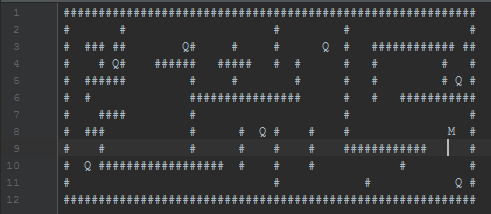

Határidő: 2016. december 15. (kiírástól számított 3 hét)
Feladat:
Készíts egy terminálos (konzolos) labirintus alkalmazást, amelyben a felhasználó egy karaktert vezérel
a nyílbillentyűk segítségével. (#matrix #billentyuzetkezeles)
A játékteret egy szöveges fájlból olvasd be, ahol a karakterek jelentik, hogy melyik pozíción mi található. Az alábbi javallattól eltérhetsz: (#fajlkezeles #string)
# - fal - folyossó (space) Q - kulcs M - Mberünk kezdőpozíciója

A felhasználó a folyossó és kulcs mezőkön tud közlekedni. A falakra nem tud lépni. Ezek öröklődéssel legyenek megvalósítva, legyen egy közös "blokk" ősosztály, amelyből a konkrét implementációk származnak. A játékos pozíciója szintén folyossó mezőnek számít. (#oroklodes #osztaly)
Amennyiben a játékos kulcs mezőn megnyomja a SPACE billentyűt, úgy a kulcsot felveszi és a kulcs mező átvált folyosóra.
Számoljuk, és folyamatosan közöljük a felhasználóval, hogy hány kulcsból hányat gyűjtött össze eddig.
A játékos célja, hogy a pályán található összes kulcsot felvegye. Ekkor közöljük vele a nyerésének tényállását, valamint írjuk ki, hogy a program indítása óta mennyi idő telt el. Ha erre üt egy ENTER-t a felhasználó, akkor lépjünk ki a programból. (#date)
A megoldás lehet ennél bővebb, változatosabb, játékosabb, de ezek a minimum követelmények, amelyeket teljesítenie kell. A megoldásban törekedj a strukturáltságra, az átláthatóságra. Ennek okán használd az OOP eszközeit.
Beadás módja:
A) E-mailben zip fájlban a hello tekercs turizsolt pötty hu e-mail címre.
B) VAGY a github.com oldalra feltöltve és arról linket küldve a fenti e-mail címre.
Turi Zsolt, 2016. november 24.